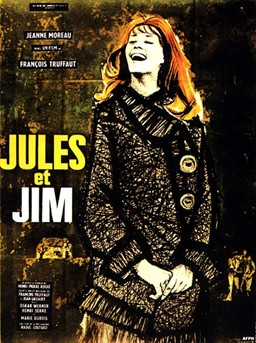

François Truffaut
1962
105 minutes
TITLE: Jules et Jim TEXT PLACEHOLDER 149
This is one of those rare Truffaut films that you're not going to like very much, about a love triangle between two dudes and a woman. The guys stay friends and the woman eventually goes off the rails and eventually murder-suicides one of the friends. You spend much of the film mentally screaming at the two dudes, move on you schmucks, she's not worth it even if she is played by Jeanne Moreau.
Despite your distaste for the characters, the signature song from the film, "Le Tourbillon de la vie", is one of your favorite karaoke songs. That song (though not the film itself) gives you fond and no-so-fond memories of a few different women you have had some initial doomed encounter with that turned into more, with varying levels of friendship or passion or romance or bittersweet horror...
Elle avait des bagues à chaque doigt
Des tas de bracelets autour des poignets
Et puis elle chantait avec une voix
Qui, sitôt, m'enjôla
Elle avait des yeux, des yeux d'opale
Qui me fascinaient, qui me fascinaient
Y avait l'ovale de son visage pâle
De femme fatale qui m'fut fatal
De femme fatale qui m'fut fatal
On s'est connu, on s'est reconnu
On s'est perdu de vue, on s'est r'perdu d'vue
On s'est retrouvé, on s'est réchauffé
Puis on s'est séparé
Chacun pour soi est reparti
Dans l'tourbillon de la vie
Je l'ai revue un soir, aïe, aïe, aïe
Ça fait déjà un fameux bail
Ça fait déjà un fameux bail
Au son des banjos je l'ai reconnue
Ce curieux sourire qui m'avait tant plu
Sa voix si fatale, son beau visage pâle
M'émurent plus que jamais
Je me suis soûlé en l'écoutant
L'alcool fait oublier le temps
Je me suis réveillé en sentant
Des baisers sur mon front brûlant
Des baisers sur mon front brûlant
On s'est connu, on s'est reconnu
On s'est perdu de vue, on s'est r'perdu de vue
On s'est retrouvé, on s'est séparé
Puis on s'est réchauffé
Chacun pour soi est reparti
Dans l'tourbillon de la vie
Je l'ai revue un soir ah! là là
Elle est retombée dans mes bras
Elle est retombée dans mes bras
Quand on s'est connu, quand on s'est reconnu
Pourquoi s'perdre de vue, se reperdre de vue?
Quand on s'est retrouvé, quand on s'est réchauffé
Pourquoi se séparer?
Alors tous deux on est repartis
Dans le tourbillon de la vie
On a continué à tourner
Tous les deux enlacés
Tous les deux enlacés
Tous les deux enlacés
Time to choose something different: